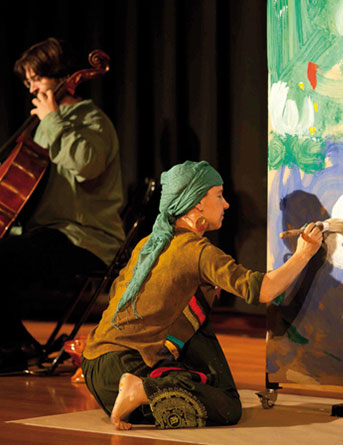

| | | | | |  | | | | Concert familiar | Cordes grillades +2 | Dissabtes 12, 19, i 26 d'abril I 17.30 h
Diumenges 13, 20 i 27 d'abril I 12.00 h | Brossa Quartet de Corda & La Botzina | Aleix Puig i Pere Bartolomé, violins Imma Lluch, viola Quico Pugès, violoncel Maria Vidal, il-lustracions Toni Cuesta, narració i trompeta
| "Hi havia una vegada un grill...". així comença aquest
concert per a quartet de corda pensat per als més petits. Un
conte musicat pel Quartet Brossa i amanit amb pintures de
molts colors per explicar una història que va d'insectes,
ocells i, sobretot, molta música. | Preu per concert: 6 €
50% de dte. clients "la Caixa" | Places limitades | | |
| | | | Compartir a: | | | | | | | |
|